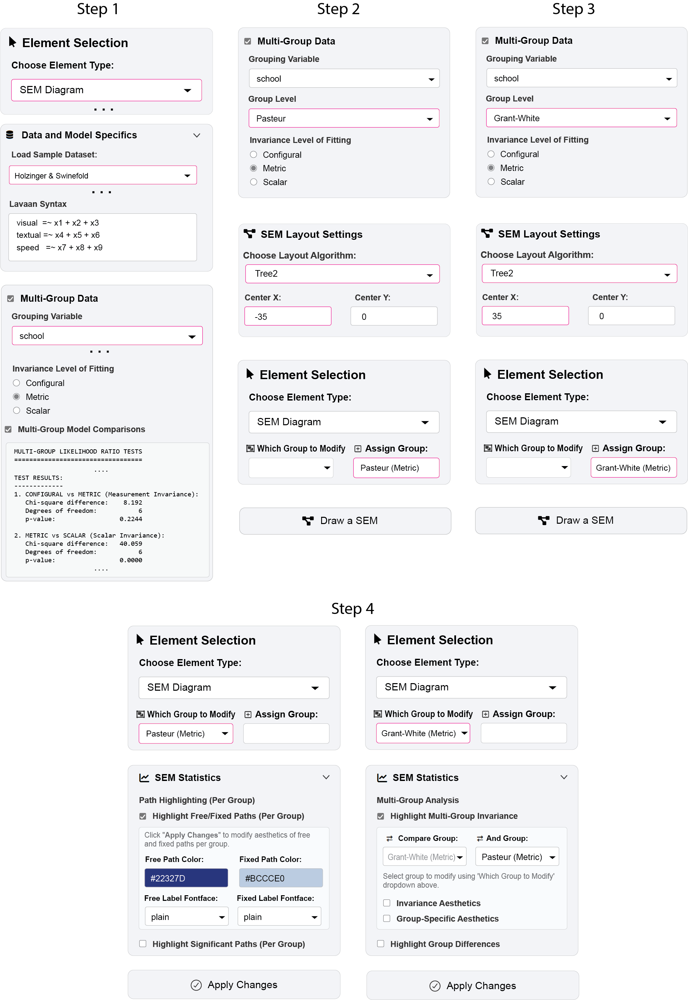
ggsem Tutorial Step-by-Step Procedures for Examples 1-3
Supplementary GUI walkthroughs for the paper “Reproducible Visual Exploration and Comparison of Structural Models: A Parameter-Centric Workflow in R”
Example #1: Multi-Group SEM Visualization
This reproduces Figure 4: side-by-side multi-group SEM with invariant (purple) vs. group-specific (brown) paths highlighted.
Step 1: Load data & test invariance
- Select SEM Diagram from Element Type
- In Data and Model Specifics: load Holzinger & Swineford dataset
- Check Multi-Group Data, select grouping variable
school - Activate Multi-Group Model Comparisons: results show metric invariance supported (p = .224)
Step 2: Generate first group diagram
- Group Level:
Pasteur - Invariance Level: Metric
- SEM Layout Settings: layout =
Tree2, Center X =-35 - Group label:
Pasteur (Metric) - Click Draw a SEM
Step 3: Add second group
- Group Level:
Grant-White - Center X =
+35 - Group label:
Grant-White (Metric) - Click Draw a SEM
Step 4: Style diagrams
Pasteur diagram:
- Select
Pasteur (Metric)from Which Group to Modify - SEM Statistics: enable Highlight Free/Fixed Paths (Per Group)
- Click Apply Changes
Grant-White diagram:
- Select
Grant-White (Metric) - Enable Highlight Multi-Group Invariance
- Click Apply Changes
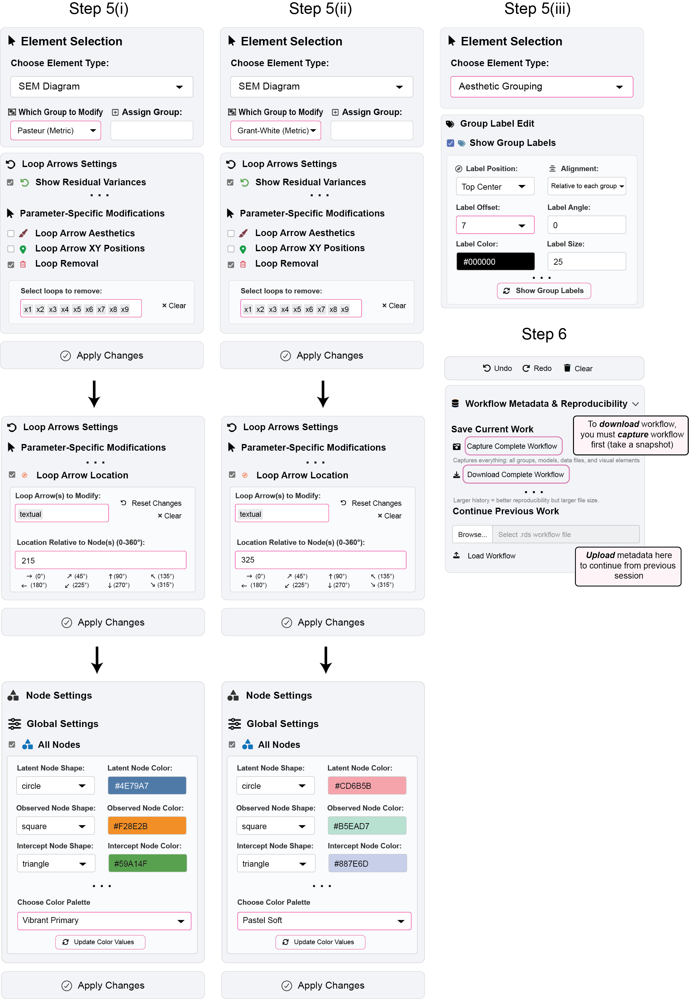
Step 5: Final adjustments
- Loop Arrows Settings: enable Show Residual Variances, hide residuals for
x1-x9 - For
textualnode: set Loop Arrow Location to225°(Grant-White),315°(Pasteur) - Global Settings for All Nodes: choose a color palette Vibrant Primary for Pasteur (Metric), and color palette Pastel Soft for Grant-White (Metric). Click Update Color Values, and then Apply Changes.
- Aesthetic Grouping: enable Show Group Labels, Label Offset =
7
Step 6: Save metadata
- First, click Capture Complete Workflow, this takes a screenshot of the session’s metadata.
- Then, click Download Complete Workflow. The metadata file can then be uploaded in future separate sessions or be used to generate a final
ggplot2object.
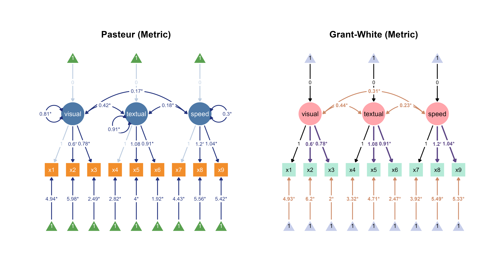
Example #2: Overlaid Comparison
This reproduces Figure 5B: overlaid comparison with dual-parameter labels (e.g., 0.85 | 0.82).
Step 1: Prepare model & layout
library(tidySEM)
library(ggsem)
library(lavaan)
model_syntax <- '
visual =~ x1 + x2 + x3
textual =~ x4 + x5 + x6
speed =~ x7 + x8 + x9
'
fit <- sem(model_syntax, data = HolzingerSwineford1939,
group = 'school', group.equal = "loadings")
lay <- get_layout("visual", "", "", "", "textual", "", "speed", "", "",
"x1", "x2", "x3", "x4", "x5", "x6", "x7", "x8", "x9",
rows = 2)
tidysem_object <- prepare_graph(model = fit, layout = lay)
plot(tidysem_object)
Step 2: Import into ggsem
ggsem_builder(type = "sem") |>
add_group('Pasteur (Metric)',
model = fit,
object = tidysem_object,
y = 20,
level = 'Pasteur') |>
add_group('Grant-White (Metric)',
model = fit,
object = tidysem_object,
y = -20,
level = 'Grant-White') |>
launch()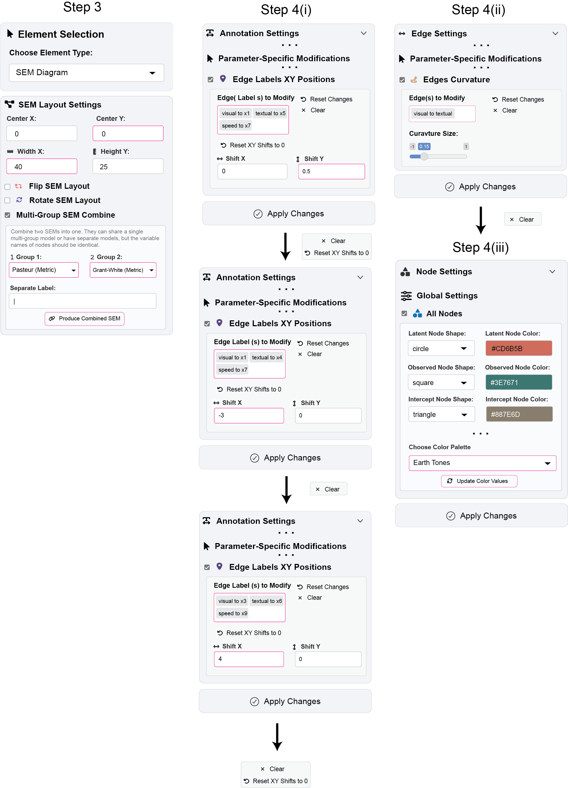
Step 3: Create overlaid diagram
- SEM Layout Settings: check Multi-Group SEM Combine
- Label format: Separate Label with ‘|’
- Group 1 =
Pasteur (Metric), Group 2 =Grant-White (Metric) - Width X =
40, Center Y =0 - Click Combine Multiple SEMs
Step 4: Fine-tune layout
- Edge Labels XY Positions: select
visual→x1,textual→x5,speed→x7, Shift Y =0.5 - Edges Curvature: select
visual–textual, Curvature Size =0.15 - Shift
visual→x1,textual→x4,speed→x7labels left: Shift X =-3 - Node Settings: select Earth Tones palette, click Update Color Values
- Click Apply Changes after each
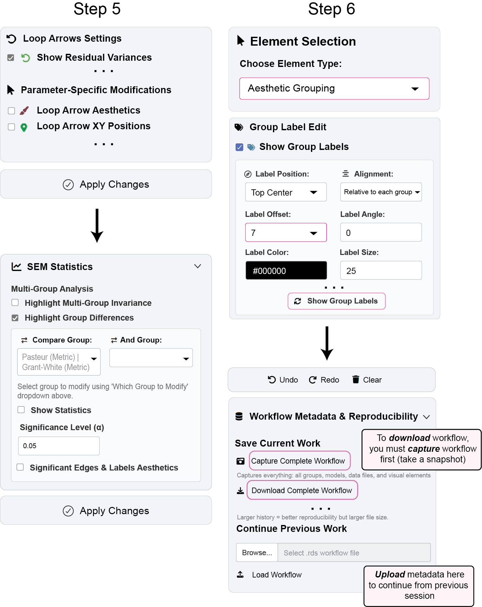
Step 5: Add statistical overlays
- Loop Arrow Settings: enable Show Residual Variances
- SEM Statistics: enable Highlight Group Differences (Wald tests)
- Enable Show Statistics
- Adjust significance threshold α as needed
Step 6: Finalize
- Aesthetic Grouping: enable Show Group Labels
- Click Capture Complete Workflow to save metadata
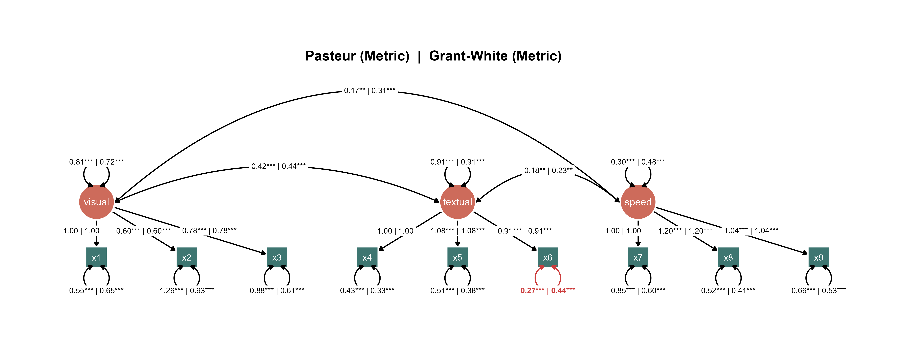
Example #3: Multi-Paradigm Visualization
This reproduces Figure 8C: cross-paradigm comparison with network-derived colors.
Preparation:
library(ggsem)
library(lavaan)
library(blavaan)
library(semPlot)
library(qgraph)
HS_pasteur <- subset(HolzingerSwineford1939, school == "Pasteur")
HS_pasteur_vars <- HS_pasteur[, paste0("x", 1:9)]
model_syntax <- '
visual =~ x1 + x2 + x3
textual =~ x4 + x5 + x6
speed =~ x7 + x8 + x9
'
fit_freq <- cfa(model_syntax, data = HS_pasteur_vars)
fit_bayes <- bcfa(model_syntax, data = HS_pasteur_vars,
n.chains = 2, burnin = 500, sample = 1000)
SAMPLING FOR MODEL 'stanmarg' NOW (CHAIN 1).
Chain 1:
Chain 1: Gradient evaluation took 0.00025 seconds
Chain 1: 1000 transitions using 10 leapfrog steps per transition would take 2.5 seconds.
Chain 1: Adjust your expectations accordingly!
Chain 1:
Chain 1:
Chain 1: Iteration: 1 / 1500 [ 0%] (Warmup)
Chain 1: Iteration: 150 / 1500 [ 10%] (Warmup)
Chain 1: Iteration: 300 / 1500 [ 20%] (Warmup)
Chain 1: Iteration: 450 / 1500 [ 30%] (Warmup)
Chain 1: Iteration: 501 / 1500 [ 33%] (Sampling)
Chain 1: Iteration: 650 / 1500 [ 43%] (Sampling)
Chain 1: Iteration: 800 / 1500 [ 53%] (Sampling)
Chain 1: Iteration: 950 / 1500 [ 63%] (Sampling)
Chain 1: Iteration: 1100 / 1500 [ 73%] (Sampling)
Chain 1: Iteration: 1250 / 1500 [ 83%] (Sampling)
Chain 1: Iteration: 1400 / 1500 [ 93%] (Sampling)
Chain 1: Iteration: 1500 / 1500 [100%] (Sampling)
Chain 1:
Chain 1: Elapsed Time: 1.118 seconds (Warm-up)
Chain 1: 1.977 seconds (Sampling)
Chain 1: 3.095 seconds (Total)
Chain 1:
SAMPLING FOR MODEL 'stanmarg' NOW (CHAIN 2).
Chain 2:
Chain 2: Gradient evaluation took 0.000133 seconds
Chain 2: 1000 transitions using 10 leapfrog steps per transition would take 1.33 seconds.
Chain 2: Adjust your expectations accordingly!
Chain 2:
Chain 2:
Chain 2: Iteration: 1 / 1500 [ 0%] (Warmup)
Chain 2: Iteration: 150 / 1500 [ 10%] (Warmup)
Chain 2: Iteration: 300 / 1500 [ 20%] (Warmup)
Chain 2: Iteration: 450 / 1500 [ 30%] (Warmup)
Chain 2: Iteration: 501 / 1500 [ 33%] (Sampling)
Chain 2: Iteration: 650 / 1500 [ 43%] (Sampling)
Chain 2: Iteration: 800 / 1500 [ 53%] (Sampling)
Chain 2: Iteration: 950 / 1500 [ 63%] (Sampling)
Chain 2: Iteration: 1100 / 1500 [ 73%] (Sampling)
Chain 2: Iteration: 1250 / 1500 [ 83%] (Sampling)
Chain 2: Iteration: 1400 / 1500 [ 93%] (Sampling)
Chain 2: Iteration: 1500 / 1500 [100%] (Sampling)
Chain 2:
Chain 2: Elapsed Time: 1.537 seconds (Warm-up)
Chain 2: 2.929 seconds (Sampling)
Chain 2: 4.466 seconds (Total)
Chain 2: Computing post-estimation metrics (including lvs if requested)...semPaths(fit_freq, what = "est", style = "lisrel",
whatLabels = "est", layout = 'tree2') -> freq_p
semPaths(fit_bayes, what = "est", style = "lisrel",
whatLabels = "est", layout = 'tree2') -> bayes_p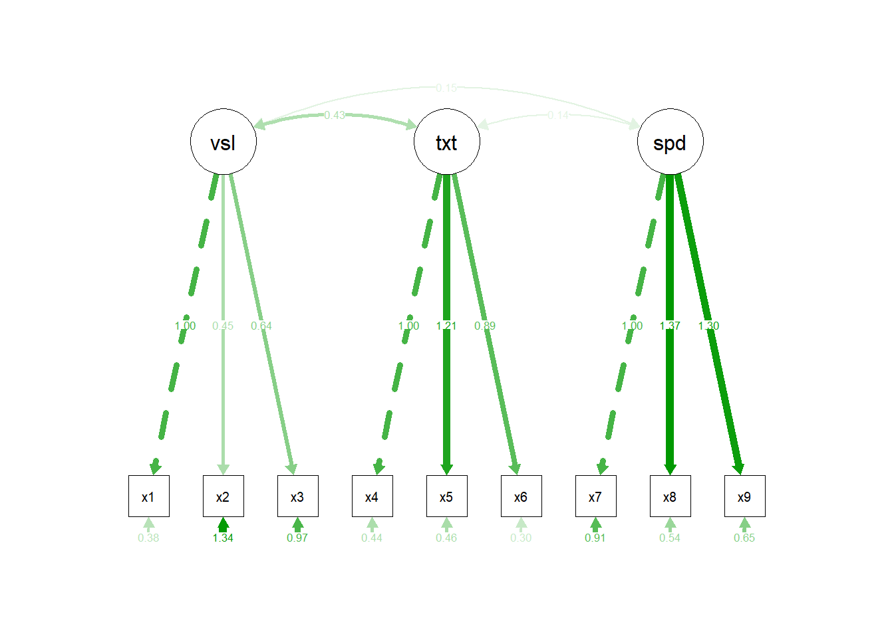
cor_matrix <- cor(HS_pasteur_vars, use = "complete.obs")
net_cognitive <- qgraph(cor_matrix, graph = "pcor",
layout = "spring", minimum = 0.1)
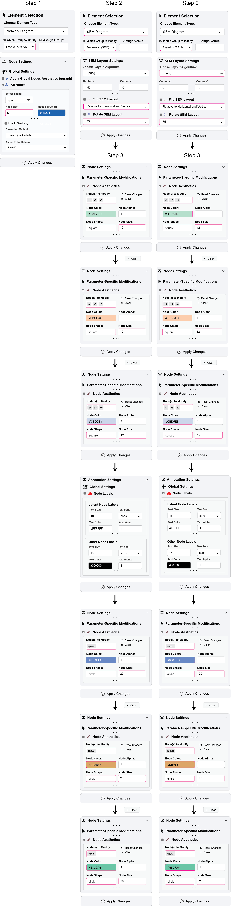
ggsem_builder() |>
add_group(name = "Frequentist SEM",
object = freq_p,
model = fit_freq,
type = "sem",
width = 20, height = 20,
x = -50) |>
add_group(name = "Bayesian SEM",
object = bayes_p,
model = fit_bayes,
type = "sem",
width = 20, height = 20,
x = 0) |>
add_group(name = "Network Analysis",
object = net_cognitive,
type = "network",
width = 20, height = 20,
x = 50) |>
launch()Step 1: Reference network clustering
- Element Type: Network Diagram
- Which Group to Modify:
Network Analysis - Node Settings → Global Settings: check Apply Global Nodes Aesthetics (qgraph), and check Enable Clustering
- Clustering Method =
Louvain (undirected), palette =Pastel 2 - Node Shape =
square, Node Size =12 - Click Apply Changes
Step 2: Align SEM layouts
Frequentist SEM:
- Element Type: SEM Diagram
- Which Group to Modify:
Frequentist (SEM) - SEM Layout Settings: layout =
spring, enable Flip SEM Layout, Rotate =75° - Click Apply Changes
Bayesian SEM: Repeat same settings for Bayesian (SEM)
Step 3: Propagate network colors to SEMs
- Node Settings → Parameter-Specific Modifications
- Set Node Color to corresponding cluster color from network:
- Cluster 1:
x1,x2,x3(node color =#B3E2CD)
- Cluster 2:
x4,x5,x6(node color =#FDCDAC)
- Cluster 3:
x7,x8,x9(cluster 3 =#CBD5E8)
- Cluster 1:
- Node Shape =
square, Node Size =12for the observed variablesx1-x9 - Change the color of Node Labels of observed variables to black (
#000000) for legibility under Annotation Settings and Global Settings - Latent variable nodes can also be colored:
speed(#6889CC),textual(#DBA567),visual(#68C7A6) - Click Apply Changes (repeat for both SEM groups)
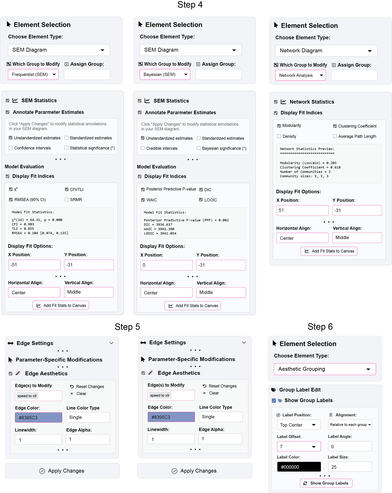
Step 4: Add fit indices
- SEM Statistics: enable Display Fit Indices under Model Evaluation
- Set positions for each group:
- Frequentist SEM: X =
-51, Y =-31 - Bayesian SEM: X =
0, Y =-30 - Network: X =
51, Y =-31
- Frequentist SEM: X =
- Click Add Fit Stats to Canvas for each group.
Step 5: Add titles
- Set Element Type as Aesthetic Grouping
- Click Group Label Edit and enable Show Group Labels: Label Offset =
5 - Click Show Group Labels
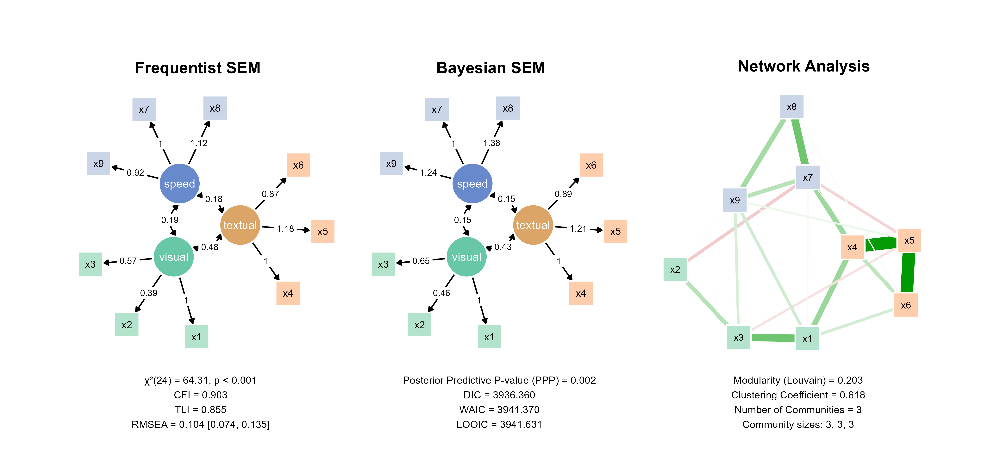
(Optional) Step 6: Multi-Model, Multi-Sample Composite Visualization
HS_pasteur <- subset(HolzingerSwineford1939, school == "Pasteur")
HS_pasteur_vars <- HS_pasteur[, paste0("x", 1:9)]
HS_grantwhite <- subset(HolzingerSwineford1939, school == "Grant-White")
HS_grantwhite_vars <- HS_grantwhite[, paste0("x", 1:9)]
model_syntax <- '
visual =~ x1 + x2 + x3
textual =~ x4 + x5 + x6
speed =~ x7 + x8 + x9
'
fit_pasteur1 <- cfa(model_syntax, data = HS_pasteur_vars)
fit_grantwhite1 <- cfa(model_syntax, data = HS_grantwhite_vars)
model_syntax2 <- '
visual =~ x1 + x2 + x3
textual =~ x4 + x5 + x6
speed =~ x7 + x8 + x9
x1 ~~ x4
x4 ~~ x7
'
fit_pasteur2 <- cfa(model_syntax2, data = HS_pasteur_vars)
fit_grantwhite2 <- cfa(model_syntax2, data = HS_grantwhite_vars)# Launch ggsem app
ggsem_builder() |>
add_group(name = "Pasteur (Original)",
object = fit_pasteur1,
type = "sem",
width = 20, height = 20,
x = -25,
y = -30) |>
add_group(name = "Pasteur (Modified)",
object = fit_pasteur2,
type = "sem",
width = 20, height = 20,
x = 25,
y = -30) |>
add_group(name = "Grant-White (Original)",
object = fit_grantwhite1,
type = "sem",
width = 20, height = 20,
x = -25,
y = 30) |>
add_group(name = "Grant-White (Modified)",
object = fit_grantwhite2,
type = "sem",
width = 20, height = 20,
x = 25,
y = 30) |>
launch()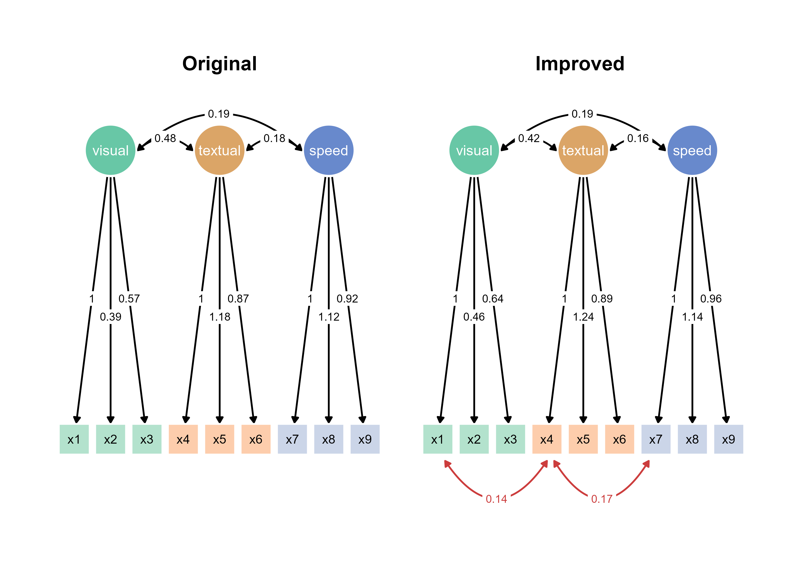